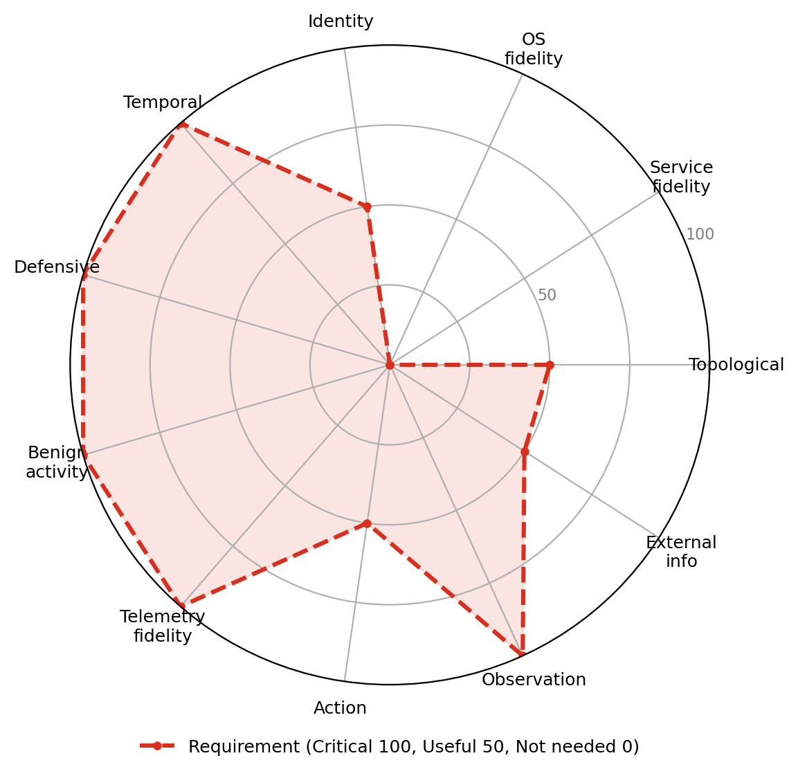

UC-D7 · Cognitive resilience under adversarial content
A generative defender agent must keep its triage or threat-hunting quality from collapsing when part of the telemetry it reads carries agent-directed adversarial content: indirect prompt injection and deceptive or cloaked text seeded into logs, filenames, ticket and alert bodies, documents, tool output, and enrichment feeds. The failure mode under test, following injected instructions, does not exist for a symbolic reinforcement-learning policy that never reads content, so this is a generative-AI-specific objective (ATLAS indirect prompt injection AML.T0051.001 and agent context poisoning AML.T0080; OWASP ranks indirect prompt injection first among LLM risks). Success means performance degrades no more than a declared bound relative to the clean condition, injected instructions are not acted on, and ideally the manipulation is flagged. It is only evaluable where a genuine benign baseline makes the injected content non-trivial to separate and no oracle marks which artifacts are adversarial, which is why it depends on realistic telemetry, benign activity, and an agent-directed content channel.

Dimension requirement profile
| Dimension | Requirement |
|---|---|
| Topological realism | Useful |
| Service fidelity | Not needed |
| OS fidelity | Not needed |
| Identity realism | Useful |
| Temporal dynamics | Critical |
| Defensive realism | Critical |
| Benign activity realism | Critical |
| Telemetry fidelity | Critical |
| Action realism | Useful |
| Observation realism | Critical |
| External information ecosystem | Useful |
Sub-dimension requirements (all 122 sub-dimensions)
This use case is specified at the sub-dimension level. Counts per dimension (critical / useful / not needed); explore the full checklist in the scorecard.
| Dimension | Critical | Useful | Not needed |
|---|---|---|---|
| Topological realism | 0 | 10 | 0 |
| Service fidelity | 0 | 0 | 14 |
| OS fidelity | 0 | 0 | 8 |
| Identity realism | 0 | 13 | 0 |
| Temporal dynamics | 1 | 5 | 5 |
| Defensive realism | 1 | 8 | 3 |
| Benign activity realism | 1 | 9 | 0 |
| Telemetry fidelity | 1 | 10 | 0 |
| Action realism | 0 | 1 | 10 |
| Observation realism | 4 | 8 | 0 |
| External information ecosystem | 0 | 3 | 7 |